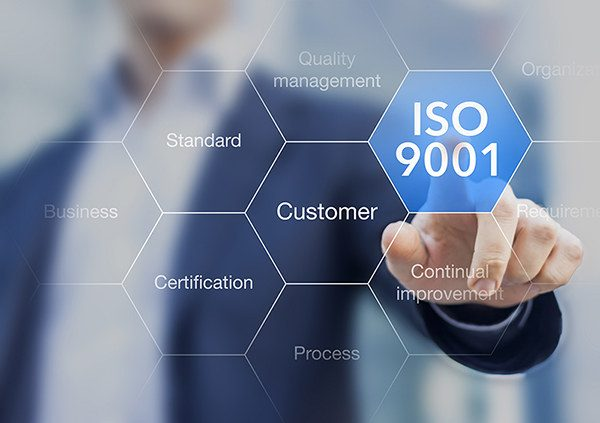

ISO
Everything You Need to Know About ISO 9001:2015 Quality Management System
Discover the benefits, key changes, and implementation process of ISO 9001:2015. Improve your QMS, increase customer satisfaction, and gain a…

Our approach is unique - we help your team to meet and even exceed your company's quality assurance standards and increase profitability at all levels of your business operations.
We empower our clients by training them in continuous improvement methods which pay dividends long after our consultants have left.
We help your organization to develop and implement Quality Management System (QMS). Guaranteed. We develop process measures that communicate the value proposition of your organization from frontline to executive which in turn creates an ongoing culture of continuous improvement that pays dividends long after the project is complete
Working together with your team, we engineer workplaces that work; improving delivery, increasing productivity and enhancing your customer experience. We empower teams to generate incremental improvements that add up to impactful results. Our mission is to instill a culture of continuous improvement that optimizes business performance, paying dividends long after our team has left.
Chmltech’s methodology goes beyond processes to examine products and people including staff performance, management behavior and use of technology that are critical to your business operations. We do not simply leave clients with a report of recommendations. Rather, we employ an approach that engages your team through every step of the quality management system journey.
Chmltech brings an experienced team with deep industry knowledge and a powerful Methodology to every initiative. Below are some of our key activities you can expect during the project:
Defining Key Performance Metrics (KPIs) – we will create a framework to identify the Key Metrics including Operation Levels, Productivity, Speed and Quality for Key Processes. These measures can be used to determine the current level of performance as well as measure the success of the implementation.
Ownership – Our approach ensures that your team is the key drivers of the project and that they will continue to maintain ownership over their processes as they collectively optimize operations.
Review of Current Practices and Tools – Chmltech will conduct a thorough as-is analysis from which we can then design sustainable solutions. This includes mapping key processes, gathering and analyzing financial/operating data, conducting direct observations and mapping out management tools.
Assessing Impact of Non-Value-Added Activities – Chmltech will perform process observations to uncover the customer value-added and non-value-added activities. These observations will highlight manufacturing capacity.
Change Management Strategy – Chmltech will conduct an initial assessment of the organization to identify the change readiness. We will then be able to provide a comprehensive plan to address change management needs for the project.
Implementation of Quality Management Tools – Chmltech will work alongside your company’s leadership to implement tools that translate your company’s quality management plan into activities understood by all employees.
Document Control – Chmltech will train your team to stay organize and store all your organization's documents in one secure, centralized system. Implement consistent, companywide document workflow processes. Locate documents easily using intelligent, global search capabilities that use metadata to locate assets with as little as a single word of text. use electronic signatures to meet compliance requirements.
Audit – Correct issues uncovered during an audit, management review, or identified in a customer complaints using automated processes to drive accountability. Perform root cause analysis using a variety of methodologies including 5 Why, Ishikawa/fishbone, and gap analysis to ensure rapid resolutions to improve products, services, and overall customer satisfaction.
From our insights
Discover the benefits, key changes, and implementation process of ISO 9001:2015. Improve your QMS, increase customer satisfaction, and gain a…
Book a strategy call. We will talk through your goals, pain points and where AI, systems or process work can make the biggest difference.